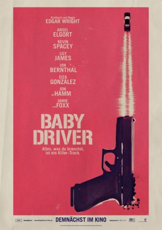

#7111 Baby Driver
Auszeichnungen: für 3 Oscars nominiert 1 BAFTA-Awards gewonnen
 gesehen am 27.09.2017
gesehen am 27.09.2017
 
 IMDB-Wertung: 7.6 / 10
IMDB-Wertung: 7.6 / 10  Tomatometer: 93
Tomatometer: 93  Metascore: 86
Metascore: 86 
Der Film handelt von einem talentierten jungen Fluchtwagenfahrer, der sich ganz auf den Beat seiner persönlichen Playlist verlässt, um der Beste in seinem Job zu werden. Als er das Mädchen seiner Träume trifft, sieht Baby eine Chance, seine kriminelle Karriere an den Nagel zu hängen und einen sauberen Ausstieg zu schaffen. Aber nachdem er gezwungen wird, für einen Gangsterboss zu arbeiten und ein zum Scheitern verurteilter Raubüberfall sein Leben, seine Liebe und seine Freiheit gefährdet, muss er für seine Handlungen geradestehen.
Jahr: 2017
Dauer: 112 Minuten
FSK: 16
Land: England Studio: Sony Pictures ReleasingTonspuren: DTS - ,
Untertitel: Englisch, Deutsch,
Auflösung: 1080p (1920x808) Größe: 9369 MB
Genre: Action, Thriller, Musik, Krimi
Regisseur: Edgar Wright
Drehbuch: Edgar Wright
Soundtrack:
Darsteller:
 Ansel Elgort als Baby
Ansel Elgort als Baby Jon Bernthal als Griff
Jon Bernthal als Griff Jon Hamm als Buddy
Jon Hamm als Buddy Eiza González als Darling
Eiza González als Darling- Micah Howard als Barista
 Lily James als Debora
Lily James als Debora- Morgan Brown als Street Preacher
 Kevin Spacey als Doc
Kevin Spacey als Doc- CJ Jones als Joseph
 Sky Ferreira als Baby's Mom
Sky Ferreira als Baby's Mom- Lance Palmer als Baby's Dad
- Hudson Meek als Young Baby
 Viviana Chavez als Diner Waitress
Viviana Chavez als Diner Waitress- Hal Whiteside als Cook
 Flea als Eddie
Flea als Eddie- Lanny Joon als JD
 Jamie Foxx als Bats
Jamie Foxx als Bats- Brigitte Kali Canales als Young Mother
 Patrick R. Walker als Frat Boy #1
Patrick R. Walker als Frat Boy #1- Ben VanderMey als Frat Boy #2
- D.R. Lewis als Waiter
- Big Boi als Restaurant Patron #1
- Killer Mike als Restaurant Patron #2
- Brogan Hall als Samm
- Allison King als Nice Lady Teller
 R. Marcos Taylor als Armie
R. Marcos Taylor als Armie Paul Williams als The Butcher
Paul Williams als The Butcher- Andy McDermott als Freeze Cop
- Christopher Beanland als Bullhorn Cop
- Andrea Frye als Carjack Lady
 Keith Hudson als Diner Cop
Keith Hudson als Diner Cop- Thurman Sewell als Hellcat Thug #2
- Elijah Everett als Parking Garage Security Guard
- Walter Hill als Courtroom Interpreter
 Wilbur Fitzgerald als Judge
Wilbur Fitzgerald als Judge- Shellita Boxie als Bank Patron , uncredited
 Jeff Chase als Jeffrey , uncredited
Jeff Chase als Jeffrey , uncredited- David Conk als Tequila Goon 4 , uncredited
 Marisol Correa als Atlanta Cop , uncredited
Marisol Correa als Atlanta Cop , uncredited- Elizabeth Davidovich als Monroe County , uncredited
- Arthur Dean als Prisoner , uncredited
- Troy Faruk als Goon #5 , uncredited
- Erica Frene als Dog Lady , uncredited
- Bobby Hoskins als Construction Worker , uncredited
- Veda Howard als Radio DJ , uncredited
- Duke Jackson als Monroe County , uncredited
- Adrienne Johnson als Pedestrian , uncredited
- Chad Joyce als Prisoner , uncredited
 Danny Le Boyer als Tequila Goon 3 , uncredited
Danny Le Boyer als Tequila Goon 3 , uncredited- Trey McGriff als Homeless Man on Bench , uncredited
Datei: X:\2017(A-F)\Baby Driver (2017, FSK16, 1920x808).mkv seit 27.09.2017
Festplatte: HD 2017(A-Z)-2018(A-F)
 Es gibt insgesamt 152 Filme in der Gruppe '2017(A-F)'
Es gibt insgesamt 152 Filme in der Gruppe '2017(A-F)'